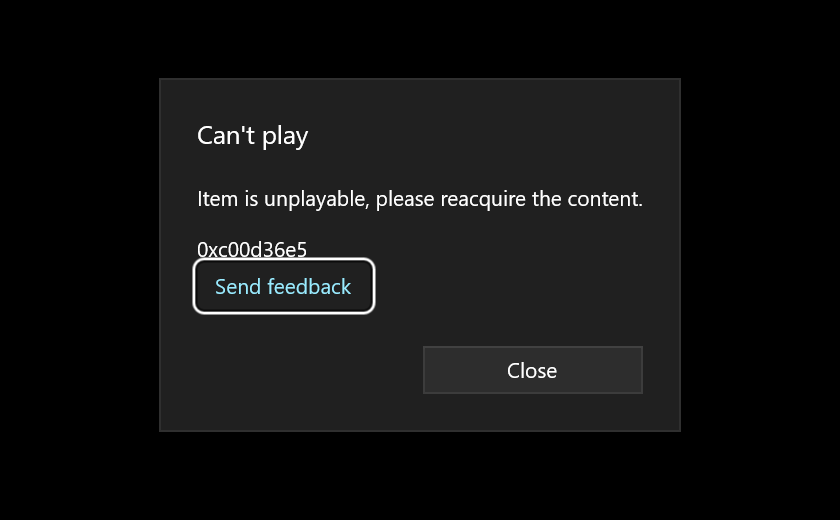

בקצרה
- מה קרה: או שווינדוס לא מכירה את שיטת הדחיסה של הסרטון (קודק, בדרך כלל HEVC של מצלמות וטלפונים חדשים), או שהקובץ עצמו נפגע, כמעט תמיד כי ההקלטה נקטעה.
- מה לא לעשות עכשיו: לא להמיר, לא לשנות סיומת, ולא להתקין “חבילות קודקים” מאתרים אקראיים.
- מה כן: פותחים קליפ אחר מאותה מצלמה. אם גם הוא לא נפתח, זה הקודק, והפתרון בחינם ולוקח דקה. אם רק הקובץ הזה לא נפתח, ממשיכים לצעדים של קובץ פגום.
הבדיקה של 30 שניות
פותחים קליפ אחר מאותה מצלמה, שצולם באותו יום ובאותן הגדרות.
- גם הוא לא נפתח? הבעיה בקודק, לא בקובץ. שום דבר לא פגום. הפתרון בסעיף הבא.
- שאר הקליפים נפתחים בלי בעיה, ורק הקובץ הזה לא? הבעיה בקובץ עצמו. מדלגים לסעיף “אם הקובץ פגום”.
אם זה הקודק
- פותחים את הקובץ ב-VLC, נגן חינמי שמנגן הכול בלי להתקין תוספות.
- או מתקינים את “HEVC Video Extensions” מחנות מיקרוסופט, ואז גם האפליקציות של ווינדוס ינגנו.
איך יודעים שזה עבד: הקובץ נפתח, וגם שאר הקליפים.
אם הקובץ פגום: מה עושים, צעד אחר צעד
- מעתיקים הכול למחשב. את הקובץ הפגום, ובאותה הזדמנות גם קליפ תקין מאותו כרטיס. מהרגע הזה עובדים רק על העותקים. הכרטיס נשאר בצד.
- מכינים “קליפ לדוגמה”. הקלטה תקינה מאותה מצלמה, באותן הגדרות בדיוק שבהן צולם הקובץ הפגום: אותה רזולוציה, אותו מספר פריימים לשנייה, אותה איכות הקלטה. הכי פשוט: קליפ שצילמתם באותו יום, לפני או אחרי הקובץ שנפגע, בלי לשנות הגדרות באמצע. הקליפ שהעתקתם מהכרטיס בדרך כלל מתאים. אם אין כזה, שימו כרטיס במצלמה, מכסה על העדשה, והקליטו 30 שניות. איך יודעים שזה נכון: שני הקבצים צולמו באותו יום, באותן הגדרות.
- מריצים תוכנה חינמית בשם untrunc. היא לוקחת את המפה מהקליפ התקין ובונה לפיה מפה חדשה לקובץ הפגום. מורידים כאן (לווינדוס, עם חלון רגיל, בלי להקליד פקודות). בוחרים את הקליפ לדוגמה, בוחרים את הקובץ הפגום, ומריצים. אם הקובץ שיצא לא נפתח, מריצים עוד פעם, זה קורה. איך יודעים שזה עבד: נוצר קובץ MP4 חדש, והוא נפתח בנגן.
- בודקים את הקובץ כולו, לא רק את ההתחלה. האורך צריך להתאים למה שצילמתם. גוללים לחמש-שש נקודות לאורך הסרטון, בעיקר לקראת הסוף. בכל נקודה עוצרים, מריצים כמה שניות, ובודקים שהתמונה זזה חלק ושהשפתיים תואמות לדיבור. אם התמונה קופצת או הסאונד זז: הקליפ לדוגמה לא תואם מספיק. מחפשים קליפ שתואם יותר ומריצים שוב. לא מחליפים תוכנה.
למה זה קרה
הקלטה שנעצרה באמצע שומרת את התמונה והסאונד, אבל לא את ה“מפה” שאומרת לנגן איפה יושב כל פריים. ווינדוס פותחת את הקובץ, לא מוצאת מפה, ומציגה הודעה כללית. עוד סימן: בווינדוס 11, אפליקציית Movies & TV הציגה להקלטה שנקטעה קוד אחר לגמרי, 0xc00d36e5 “Item is unplayable, please reacquire the content” (החלון שבתמונה למעלה). ההודעה הזאת מצביעה על הקובץ, לא על הקודק.
במצלמות סוני הקובץ הפגום מסתיים לפעמים ב-RSV במקום ב-MP4. לזה יש עמוד נפרד.
שאלות נפוצות
- השגיאה 0xc00d36c4 אומרת שהווידאו פגום? לרוב לא. ברוב המקרים ווינדוס פשוט לא מכירה את הקודק, בדרך כלל HEVC. בודקים קליפ אחר מאותה מצלמה: אם גם הוא לא נפתח, מתקינים את תוסף ה-HEVC או משתמשים ב-VLC.
- המרה של הקובץ תפתור את הבעיה? רק אם תוכנה כלשהי מצליחה לפתוח אותו. אם גם VLC לא, לקובץ אין מפה, וממיר לא יוכל לקרוא אותו. קודם בונים את המפה מחדש.
- VLC מנגן את הקובץ, אבל ווינדוס לא? אז הקובץ תקין. מתקינים את “HEVC Video Extensions” מחנות מיקרוסופט, או ממשיכים עם VLC.
- קיבלתי דווקא 0xc00d36e5, “Item is unplayable”? זה הקוד שמופיע כשההקלטה נקטעה. מתייחסים אליו כאל קובץ פגום: מעתיקים, משיגים קליפ לדוגמה, ובונים את המפה מחדש.
אם נתקעתם
הקובץ גדול, גם הריצה השנייה יצאה מקרטעת, או שפשוט אין לכם זמן להתעסק עם זה? שלחו לי קישור לקובץ ולקליפ תקין מאותה מצלמה. קודם כול אני בודק אם החומר בכלל נמצא בקובץ, ואומר לכם בדיוק מה המצב. הבדיקה הזאת בחינם, ואם לא הצלחתי לשחזר, לא שילמתם. אני אביחי, צלם וידאו, מצלם על Sony FX3. הקובץ הארוך ביותר ששחזרתי עד היום היה באורך של כמעט שעתיים.
מעדיפים מייל? avihaiteram@gmail.com
מי אני
אביחי תרם, צלם ועורך וידאו, מצלם על Sony FX3. את קובץ ה-RSV הראשון שחזרתי לעצמי: הקלטה של כמעט שעתיים שהמצלמה לא סיימה לכתוב, וחזרה שלמה. מאז עברו דרכי עוד קבצים, של סוני ושל DJI, וגם אחד שהתברר כחצי ריק כי ההעברה נתקעה. הבדיקה הראשונה תמיד בחינם, ואם לא הצלחתי, לא שילמתם.